Алгоритм RC6 (Rivest’s Cipher 6) − симметричный блочный шифр, разработанный Рональдом Ривестом в 1998 году и использующий в качестве своей основы сеть Фестеля.
RC6 представляет собой целое семейство шифров с переменным размером блока, переменным размером ключа от 1 до 32 байт и переменным числом раундов. В шифре вовсе не используются узлы замен, вместо этого используется умножение и циклические сдвиги на переменное число разрядов w/4-битовых чисел, где w − размер блока данных в битах. В силу этого алгоритм неэффективно реализуется на процессорах без быстрой команды умножения и без команды циклического сдвига на переменное число битов. Кроме того, операция умножения ресурсоемка при аппаратной реализации. По указанным причинам RC6 не был избран в качестве усовершенствованного стандарта шифрования США, хотя на ряде 32-битовых платформ его реализация оказалась существенно эффективней, чем реализация AES.
Алгоритм RC6 имеет гибкую структуру: помимо секретного ключа, параметрами алгоритма являются следующие:
• размер слова w; RC6 шифрует блоками по 4 слова;
• количество раундов алгоритма R;
• размер секретного ключа в байтах b.
Для уточнения параметров алгоритма, используемых в его конкретной реализации, применяется обозначение RC6-w/R/b. Поскольку в конкурсе AES 128-битный блок является обязательным, значение w фиксировано и равно 32. В спецификации алгоритма фиксируется также количество раундов: R = 20.
Структура алгоритма представлена на рис. 3.22.
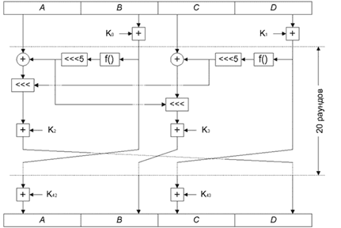
Рис. 3.22. Структура алгоритма RC-6
Как было сказано выше, в алгоритме используется 20 раундов преобразований, перед которыми выполняется частичное входное отбеливание:
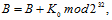
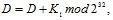
где A, B, C, D − текущие значения обрабатываемых 32-битных подблоков; K0...K43 − фрагменты расширенного ключа.
Аналогичным образом выполняется частичное выходное отбеливание:
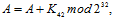
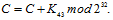
В каждом раунде алгоритма выполняются следующие действия:
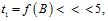
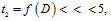
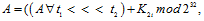
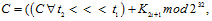
где t1 и t2 – временные переменные, количество бит вращения на переменное число бит определяется значением 5 младших бит параметра (t1 или t2), функция f( )выполняет следующее квадратичное преобразование 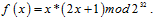
В конце каждого раунда выполняется сдвиг подблоков (рис. 3.22).
При расшифровании (рис. 3.23) подключи используются в обратном порядке, наложение подключей вместо сложения по модулю 232 выполняется вычитанием, а также сдвиг подблоков выполняется в начале раунда и в обратную сторону. Преобразование f( ) не претерпело изменений.
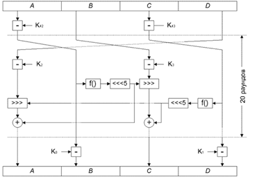
Рис. 3.23. Схема расшифрования алгоритмом RC6